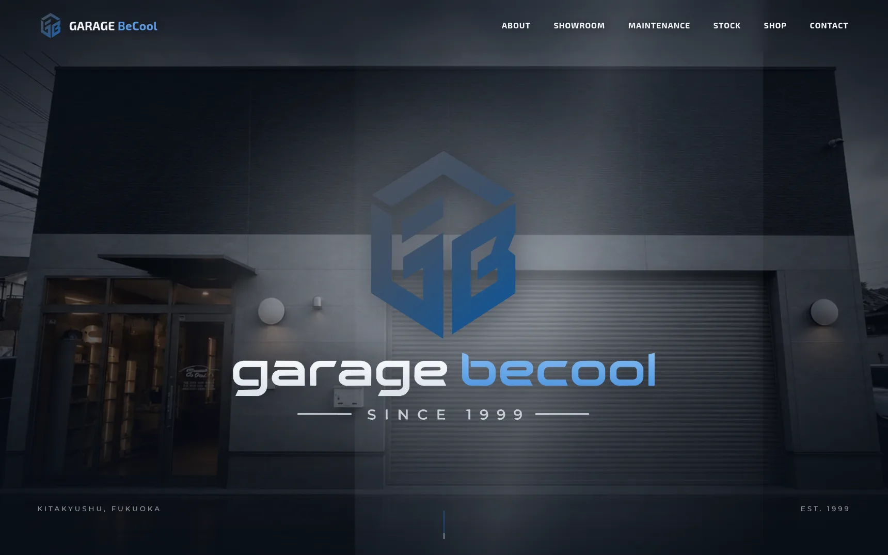
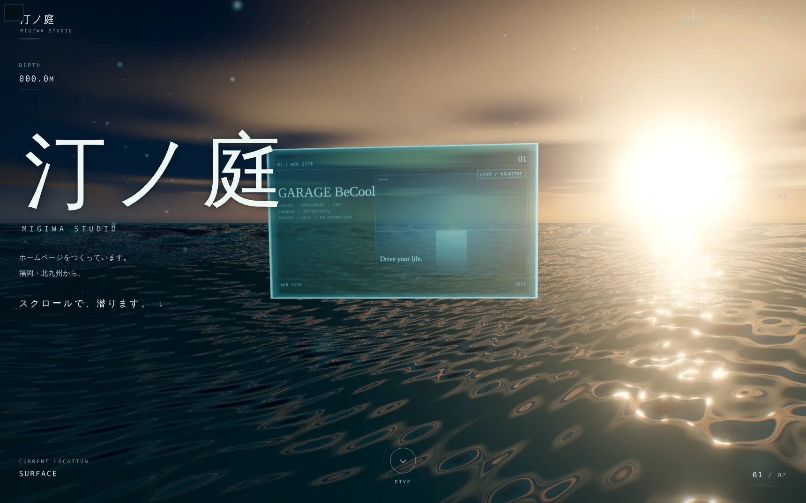
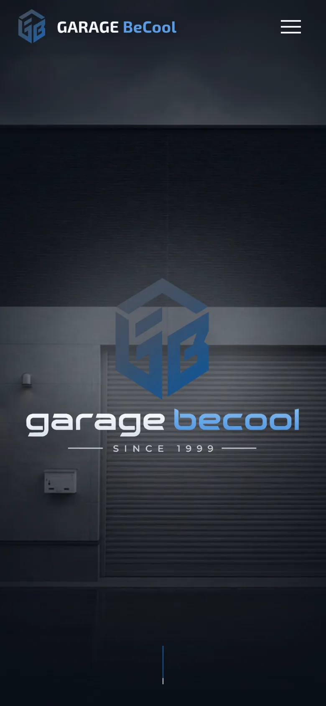
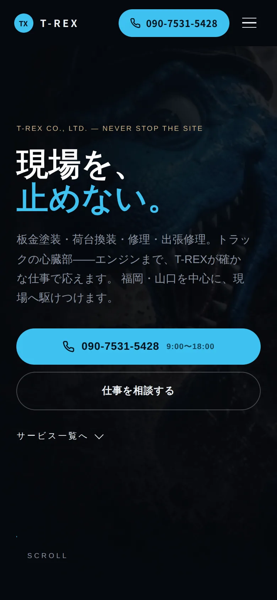
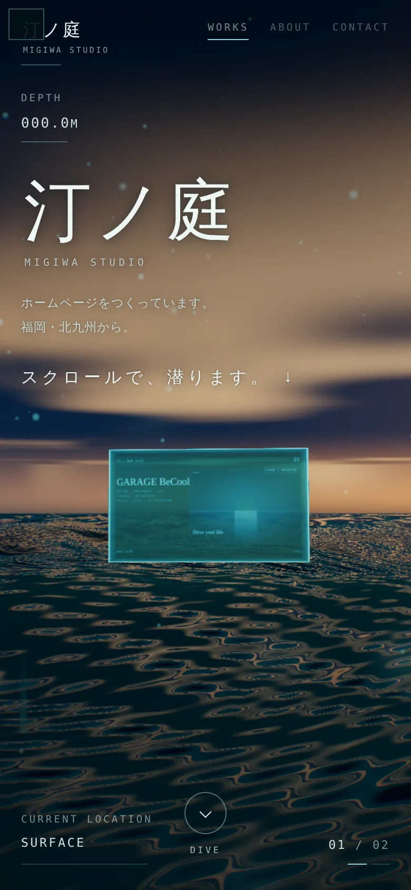

WORKS
制作実績



2件と、このサイト。
これまでにつくったサイトを、1件ずつ載せています。件数は多くありません。そのぶん、何を考えてその形にしたのかまで書きます。
数字や感想は、確かめられたものだけを載せます。書けるようになったら足します。
トップページのような動きはありません。読むためのページなので、上から下へそのまま読み進められます。
各ページの読み方
- どんな会社か
- 業種と、どこで仕事をしているか。
- つくったもの
- サイトの種類と、ページの構成。
- 実装した表現
- 画面で何が起きるか。なぜそうしたか。
- 使った技術
- 何で組んだか。専門的な名前は、その場で言い換えます。
INDEX
一覧
- GARAGE BeCool ↗
- コーポレートサイト / 中古車販売・整備 / 福岡県北九州市
- T-REX CO., LTD. ↗
- コーポレートサイト / 板金塗装・荷台換装・修理・出張修理 / 福岡・山口
- 汀ノ庭 ↗
- このサイト。水面から海底までをブラウザ上でその場で描いている。
WORKS 01
GARAGE BeCool

コーポレートサイト｜中古車販売・整備店｜福岡県北九州市
車を買う人も、整備を頼む人も、値段や在庫より先に「どんな店か」を知りたいはずだと考えました。だからトップの一番上は、店舗の写真とブランドロゴだけにして、説明の文章を置いていません。
動きは、サイト全体で1種類に揃えました。見出しの現れ方、写真の出方、カードの並び方——速さと間の取り方を、すべて同じ設定から取っています。演出ごとに速さを変えると、動きの多いサイトはすぐに散らかって見えるためです。
写真の上に文字を重ねないことも、最初に決めました。車と店の写真は、それ自体が見せるものです。文字はいつも写真の下に置いています。
動きが止まっても困らない作りにしました。動きを減らす設定の端末、通信量を節約する設定の端末、性能の低い端末では、演出だけが出ずに、写真と文章はそのまま残ります。
どんな会社か
- 中古車の販売と整備
- 福岡県北九州市の中古車販売・整備店。車の販売と、整備・車検を扱う。
つくったもの
- コーポレートサイト
- トップ、整備・車検、在庫車両、お問い合わせ。整備と在庫を独立したページにして、来た目的から最短でたどり着けるようにした。
実装した表現
- 設計図がめくれて、写真になる
- 店舗の写真は、上に重ねた青い設計図が斜めにめくれて完成写真が出る。一度出たら、もう繰り返さない。
- 粒が集まって、在庫車になる
- 在庫車の写真は、砂のような細かい粒が集まって像を結ぶ。ここも一度だけ。
- 立体で描くブランドマーク
- ページの終わりに置いたマークは、画像を貼っているのではなく、細かい光の粒で立体的に描いている。
- 1つの速さに揃えたスクロール
- 見出しは英字、下線、和文の順に現れ、写真は少し大きい状態から実寸に戻る。どのページでも同じ速さ。
- サービスは1枚に1件
- パソコンはタブで、スマホは横にスワイプして4件を読む。切り替えは文字と枠だけで作ってあるので、動きが無くても4件すべて読める。
- 面の色は2色だけ
- 白と濃紺を交互に敷く。3色目を作らないことで、ページが長くなっても散らからない。
使った技術
- Next.js(React)とTypeScript
- ページを組み立てる仕組み。書き出したあとは静かなHTMLとして置ける形にしている。
- 演出のほとんどはCSS
- めくれる設計図も、見出しの動きも、動画や画像ではなくブラウザに元からある機能で描いている。
- WebGL(three.js)
- ブランドマークの粒だけ、立体をその場で計算して描く仕組みを使っている。動画の再生ではない。
WORKS 02
T-REX CO., LTD.

コーポレートサイト｜板金塗装・荷台換装・修理・出張修理｜福岡・山口
現場が止まって困っている人が開く——そう想定して設計を始めました。ゆっくり読んでいる状況ではない、という前提です。
トップページでは、エンジンを分解して組み直す工程を、スクロールに合わせて4つの場面で見せています。鉄の塊、透視、手で組む、始動。仕事の中身が外から見えにくい業種なので、工程そのものを見せることが説明になると考えました。
ただし、体験を優先しすぎると急いでいる人を取りこぼします。画面上部の電話ボタンは、どこまでスクロールしても押せます。最初の画面の電話ボタンは演出の対象から外し、開いた瞬間から出しています。演出を丸ごと飛ばして事業内容へ行くボタンも、同じ画面に置きました。狭い画面では、章の番号を隠して電話ボタンの場所を空けています。何を先に消すかまで決めておく、という考え方です。
対応車両のセクションでは、対応できる車種のイメージとして、クレーン付き特装車を立体で表示しています。同社の車両そのものではありません。光と映り込みは屋外で撮った光のデータから取っているので、車体の見え方が写真に近くなります。通信量を節約する設定の端末、性能の低い端末、動きを減らす設定の端末では立体を出さず、同じ角度の静止画のままにしています。
どんな会社か
- トラックと現場の車を直す
- 板金塗装、荷台換装、修理、出張修理。福岡・山口を中心に対応する会社。
つくったもの
- コーポレートサイト
- トップ、サービス、施工実績、会社概要、採用情報、お問い合わせ。
実装した表現
- 4つの場面で進むエンジン
- スクロールに合わせてクランクが回り、外装が透けて中が見え、部品が外れて組み戻る。いま何番目の場面かは画面上部に出る。
- 回して見られる車種イメージ
- 対応できる車種のイメージを立体で表示。スクロールで向きが変わり、マウスでも回せる。指では回さない——縦のスクロールを邪魔しないため。
- 消えない電話ボタン
- 画面上部に固定したボタンは、演出の途中でも押せる。ここだけは何があっても残す、と決めた場所。
- 演出を飛ばす道
- 最初の画面から事業内容へ直接行ける。戻ってきても演出は壊れない。
- 軽くする条件、出さない条件
- 動きを減らす設定と、立体を描けない古いブラウザでは演出そのものを出さず、文章と写真だけにする。スマホや性能の低い端末では、粒や影の量を減らして軽くしたうえで動かす。車両の立体だけは、通信量を節約する設定と性能の低い端末でも静止画に切り替える。どちらも画面から外れれば描画を止める。
使った技術
- WebGL(three.js)
- 立体をその場で計算して描く仕組み。動画ファイルではないので、スクロールの速さにそのまま追従する。
- 立体データの読み込み
- エンジンと車両は立体データを読み込んで表示する。最初の画面を出し終えてから取りに行くので、開いた瞬間は軽い。
- Next.js(React)とTypeScript
- ページを組み立てる仕組み。文章と見出しはHTMLとして先に出るので、動きが無くても内容は読める。
WORKS 03
汀ノ庭

このサイト｜ホームページ制作｜福岡県北九州市
トップページで水面から600メートル潜っていく、あの海の答え合わせです。まだ開いていない方は、先にそちらを見てもらうのが早いと思います。
写真でも動画でもありません。ブラウザが、その場で計算しながら描いています。使っているのはthree.jsとWebGL。ブラウザに元から入っている描画の仕組みで、立体をその場で描くためのものです。動画なら、できあがった映像ファイルを再生することになりますが、この海はスクロールした位置に合わせて毎回描き直しています。だから、どの深さで止めても、その深さの絵になります。
実績が2件しかない時点で、いちばん強い証拠は自分のサイトだと考えました。潜っている時間そのものが、3件目を見ている時間になるようにしています。
深さの数字は、進み具合の表示に変えました。600という数字は、放っておくと「いつ終わるのか分からない」という不安になります。深度計を目次にして、どの深さに何があるかを出し、押せばその場所へ移動できるようにしました。読むだけの人のために、文章へ抜ける入口も常に出しています。
スマホで動くことを条件にしました。粒の数は端末の性能を見て変え、低い端末では出しません。動きを減らす設定の人にも出しません。画面から外れたら描画を止めます。凝る前に、まず止まらないこと。このサイトで自分に課した基準です。
つくったもの
- 2ページ
- トップと、この実績ページ。
実装した表現
- 水面から600メートル
- スクロールがそのまま深さになる。パネルは約75メートルに1枚、1枚には1つのことしか書かない。
- 深度計は目次
- いまの深さと、章の一覧を兼ねる。押せばその深さへ移動できる。
- いつでも押せる相談ボタン
- 潜っている途中で気が変わった人が、海底まで我慢しなくていいようにした。
- 文章へ抜ける入口
- 体験より先に内容を知りたい人のために、いつでも本文へ飛べる。
- 着底での切り替え
- 海底に着いたところで「ここから先は、文字で説明します」と書く。無言で普通の画面に変わると、終わったと思って閉じてしまうため。
使った技術
- three.jsとWebGL
- ブラウザに元からある描画の仕組みと、それを扱うための道具。追加の組み込みは要らず、開けばそのまま動く。
- 端末に合わせて量を変える
- 粒の数と負荷を、端末の性能を見て切り替える。性能の低い端末と、動きを減らす設定では演出を出さない。
- 文章は演出の外に置く
- 演出が動かない環境でも、書いてあることは全部読める。
CONTACT
こういうものを相談する
つくりたいものが固まっていなくても構いません。いまのサイトのURLか、やりたいことを1行だけでも。
3つの入口
- LINEで相談 準備中
- 短いやり取りに向いています。写真もそのまま送れます。
- フォームから送る 準備中
- 項目に沿って書くだけで送れます。
- メールで送る 準備中
- 資料や、すでにある原稿を渡したいときに。